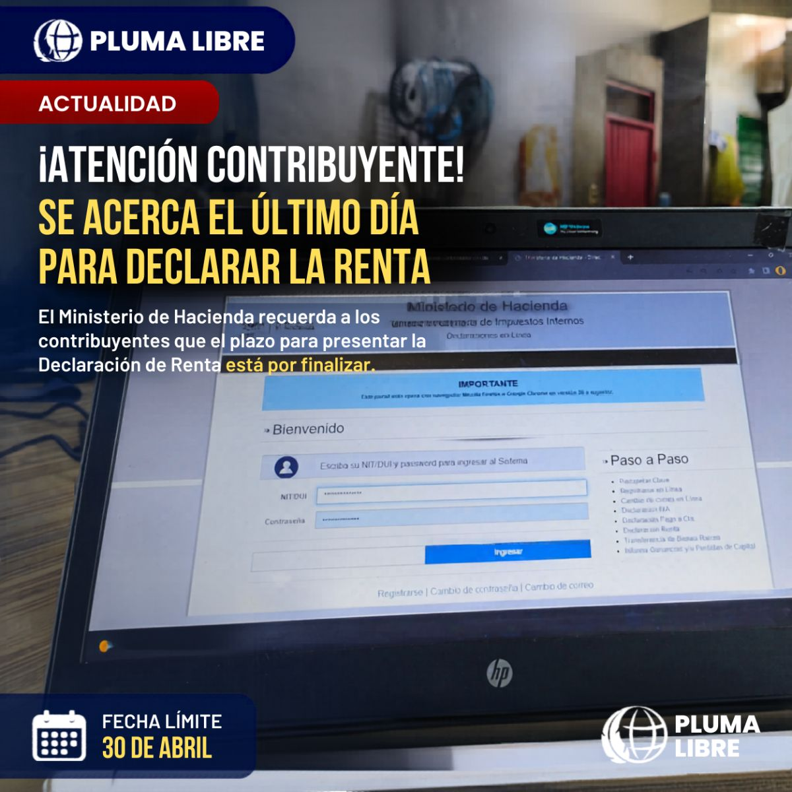

Religioso
Los obispos llevan a San Romero en el equipaje: piden que sea declarado doctor de la Iglesia
Están todos en Roma para rendirle cuentas de sus diócesis al papa León XIV. Antes de salir, el arzobispo pidió orar por esa intención.
Están todos en Roma para rendirle cuentas de sus diócesis al papa León XIV. Antes de salir, el arzobispo pidió orar por esa intención.


El video que circula en redes muestra al arzobispo de Catania colocando el Sacro Cráneo de Santa Ágata dentro de su busto-relicario del siglo XIV y al cardenal Pietro Parolin coronándolo. Fue el acto central de la conmemoración de los 900 años del regreso de las reliquias de la patrona de la ciudad desde Constantinopla.

Fue ordenado obispo y tomó posesión de la diócesis el sábado 15 de agosto en la Catedral Nuestra Señora de los Pobres. Sucede a monseñor Elías Samuel Bolaños, que estuvo 28 años al frente y se retiró al cumplir los 75.

Retiro de iniciación cristiana del 31 de julio al 2 de agosto en el Instituto Jaime Abdul Gutiérrez. Entrada 6:00 p.m., ofrenda $8 adultos y $5 niños, con guardería.

El pontífice calificó de “herida en la memoria cristiana” que la Iglesia otorgara a soberanos europeos autoridad para someter y esclavizar a otros pueblos, y pidió perdón en nombre de la institución.

El grupo ultratradicionalista quedó en cisma tras ordenar cuatro obispos desafiando al papa León XIV.

La Fraternidad San Pío X desafió a León XIV en Écône; Roma alista el decreto de excomunión.

El plazo para la declaración de la renta venció el 30 de abril.